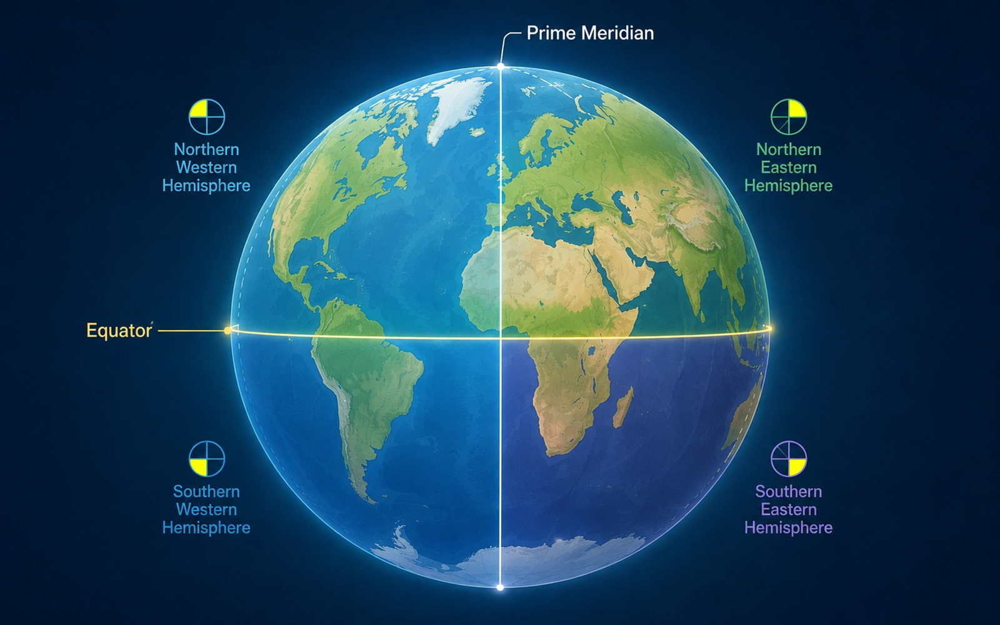
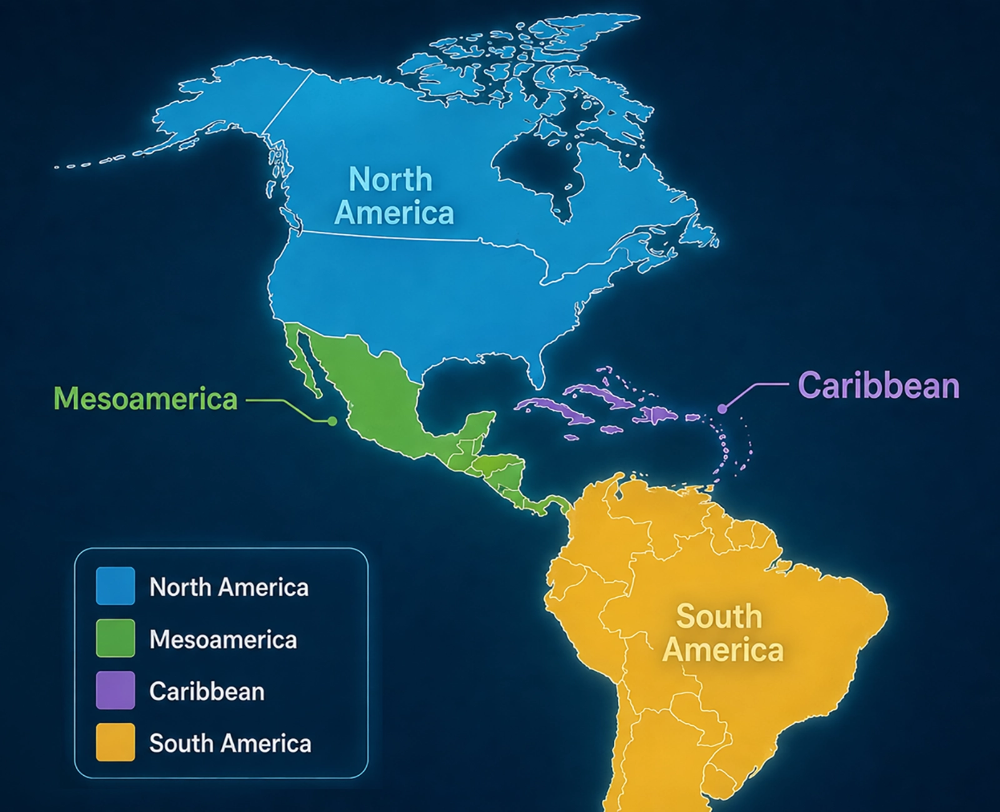

The Western Hemisphere stretches across an enormous part of Earth.
It includes continents, countries, islands, mountains, plains,
rivers, forests, and oceans.
To make this huge area easier to understand, we will organize it
into four regions that we will use throughout
Grade 5 Social Studies.
North AmericaMesoamericaThe CaribbeanSouth America
Start Here
What Is a Hemisphere?
Earth is shaped roughly like a sphere. A
hemisphere
is one half of Earth.
Geographers use imaginary lines around the globe to divide Earth
into hemispheres. These lines help us describe where places are
located.
Two of the most important imaginary lines are the
Equator and the
Prime Meridian.

The Equator and Prime Meridian help divide Earth into hemispheres.
0° Latitude
The Equator
The
Equator
circles Earth halfway between the North Pole and the South Pole.
It divides Earth into the
Northern Hemisphere and the
Southern Hemisphere.
0° Longitude
The Prime Meridian
The
Prime Meridian
runs from the North Pole to the South Pole.
It helps geographers divide Earth into the
Eastern Hemisphere and the
Western Hemisphere.
Organizing the World
What Is a Region?
A
region
is an area that geographers group together because the places in it
share something in common.
Regions can be based on location, physical geography, climate,
culture, history, or other characteristics. They help us organize a
huge and complicated world into smaller areas that are easier to study.
🧭
Important Distinction
Continent and Region Are Not the Same Thing
A
continent
is one of Earth's very large land areas. A region is a way of
organizing places for study.
This is especially important when we talk about
Mexico.
Mexico is geographically located on the
continent of North America. However, in Grade 5
Social Studies we are using the regional organization found in the
New York State Grade 5 Social Studies Framework.
In that system, Mexico is grouped with Central America in a region
called Mesoamerica.
✓
Mexico is on the
North American continent.
✓
Mexico is part of our
Mesoamerica region.
Our Geographic Framework
The Four Regions We Will Use
Throughout Grade 5, we will organize the Western Hemisphere into
four regions. This system will help us keep track of the people,
places, civilizations, and events we study.
Explore the map, then choose a region to continue.

Our Grade 5 regions: North America, Mesoamerica, the Caribbean,
and South America.
Regions are tools.
They help geographers organize places so that a huge world becomes
easier to understand. These four regions will become our geographic
roadmap for Grade 5.